Добавление библиотеки в Eagle CAD
После того, как Вы скачали файл библиотеки Eagle (с расширением .lbr), можно просто поместить этот файл в папку lbr (для Windows: "C:\Program Files\EAGLE-6.6.0\lbr"). Естественно, название папки Eagle CAD в Program Files (в данном случае - "EAGLE-6.6.0" ) будет зависеть от версии Eagle CAD. Однако, такой способ неудобен тем, что, если потом возникнет необходимость найти какую-то библиотеку (к примеру, с кем-то поделиться или перенести в другую версию Eagle CAD), придётся искать её среди огромного количества библиотек стандартной поставки. Поэтому советую создать отдельную папку для скачанных с Интернета и собственноручно созданных библиотек рядом с папкой, где хранятся Ваши проекты - т.е. по пути My Documents/eagle/lbr .
В панели управления Eagle CAD открываем меню "Options" и выбираем пункт "Directories...":
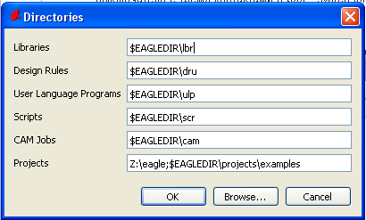
Ставим курсор в строке напротив пункта Libraries, затем кликаем мышью на кнопке Browse внизу окошка. Добираемся до папки eagle в My Documents, создаём в ней папку lbr, выбираем её и нажимаем Ok. Путь к этой папке должен появиться в строке напротив пункта Libraries:
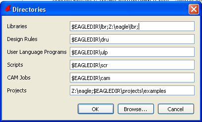
У меня вместо пути к папке "My Documents" стоит Z:/, потому что я использую сетевой диск.
Теперь можно удобно добавлять свои библиотеки в отдельную папку и искать их там, не смешивая их с библиотеками из стандартной поставки. Этот способ хорош ещё и тем, что позволяет использовать Eagle CAD на разных компьютерах, при этом работая с одними и теми же материалами. Можно просто-напросто скинуть все проекты и свои библиотеки на флешку или сетевой диск, а после прописать нужные пути на компьютере, на котором будет вестись работа.
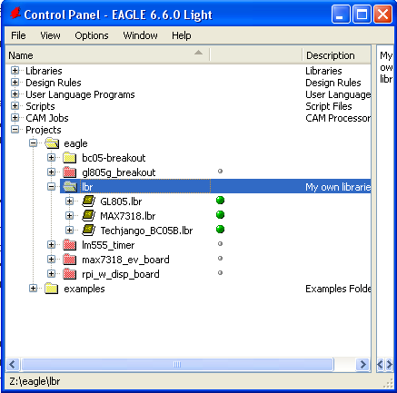
Создание своего элемента
Для примера я возьму микросхему HT9200 - генератор DTMF-кодов. В даташите указано, что микросхема есть в двух вариантах - 8 и 14 контактов, и для каждого варианта есть два возможных корпуса - DIP и SOIC.
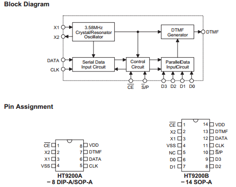
Сначала я займусь микросхемой с 8 контактами, а потом по горячим следам создам деталь ещё и для 14-ногой версии. Итак, открываем Eagle CAD.
Любые компоненты для создания плат группируются в библиотеки. Соответственно, нужно будет создать свою библиотеку для того, чтобы можно было кидать туда собственноручно изготовленные детали. В панели управления Eagle CAD идём в меню File->New->Library:
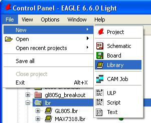
Открывается окно с пустым полем по центру и всего одной кнопкой на панели слева.
Впрочем, оно нам пока не понадобится - нужно лишь сохранить только что созданную пустую библиотеку. Идём по пути File->Save, откроется меню, спрашивающее, куда же сохранить библиотеку.
Так как я создаю библиотеку для микросхемы HT9200, я назову библиотеку просто - ht9200.lbr, в строку имени файла, соответственно, впишу ht9200.
После сохранения не закрываем пока что пустующее окно библиотеки и возвращаемся в панель управления. Вспоминаем ещё один из основных принципов Eagle CAD:
каждая радиодеталь состоит из двух частей – символ (symbol) и упаковка (package).
Если символ (определяющий логическое назначение и названия контактов детали) для каждой микросхемы свой и его придётся создавать самому, то упаковка или корпус (определяющий физическое размещение контактов на плате и их положение относительно друг друга) очевидно, будет одинаковым для каждой микросхемы в корпусе с тем же названием, будь то DIP-8, SOP-16 или TQFP-64. Так что первое и самое простое задание на тернистом пути создания своей детали - найти корпус с нужным названием в библиотеках стандартной поставки. Собственно, есть даже библиотека ic-package.lbr, откуда можно взять пару корпусов, но ассортимент в ней не самый богатый. Как правильно искать корпуса в библиотеках?
Нужно искать не радиодетали, а именно корпуса. Они внизу списка в каждой библиотеке и перед их названием другая иконка.
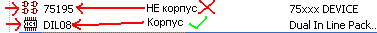
Ctrl+F - ваш друг, но стандартизации в названиях корпусов в библиотеках Eagle CAD не существует. Соответственно, в поиск можно и нужно забивать как, к примеру, "SO8", так и "SO-8".
DIL и DIP - одно и то же.
Тем не менее, поскольку каждая библиотека должна иметь свою копию корпуса, вероятность, что Вы найдёте нужный корпус, если он более-менее распространён в реальной жизни - 100%. Особенно если подключите пару внешних более-менее активно пополняемых библиотек.
Нашли корпус, просто щёлкаем по нему правой кнопкой мыши и выбираем пункт "Copy to Library". Если пункт неактивен и не реагирует на нажатия - значит, не нужно было закрывать то самое бесполезное пустое окошко библиотеки. Найдите свою библиотеку в списках панели управления и откройте её двойным щелчком, чтобы появилось это окошко, затем вернитесь к нужному корпусу и попробуйте добавить его ещё раз. После добавления корпуса в библиотеку пустое окошко внезапно преображается и становится не таким уж и пустым.
Итак, вы нашли и добавили в библиотеку все нужные для детали корпуса. Чтобы проверить это, сохраните свою библиотеку (File->Save в окошке библиотеки) и в панели управления полюбуйтесь на её содержимое:
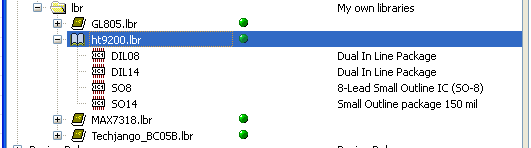
Отлично, корпуса есть... Теперь нужно заняться созданием символа. Обычно туториалы в Интернете советуют создавать символ во встроенном редакторе, для этого проходя через кучу монотонных шагов... Я опишу тот способ, который намного быстрее и удобнее, но в туториалах обычно не встречается. В стандартной поставке Eagle CAD наличествует скрипт специально для этой цели, который хоть немного и угловат в использовании, но прекрасно, как по мне, справляется с задачей. Для его использования заходим в то самое окошко редактирования нашей библиотеки и идём по пути File->Run ULP, там нам нужно найти make-symbol-device-package-bsdl.ulp. Открываем его:
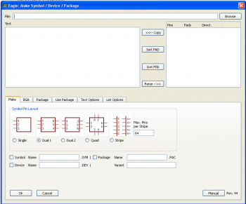
Окно скрипта можно разделить на две части - верхнюю и нижнюю. В верхней нам понадобится описать назначение выводов микросхемы, а в нижней - всего-то задать несколько опций на вкладках, поэтому начнём с нижней.
Итак, вспоминаем даташит. Нам нужно перевести названия и назначения контактов в текст. Для того, чтобы Eagle CAD мог их интерпретировать, в левом окне должно быть столько же строчек, сколько контактов у микросхемы. Каждая строчка должна состоять из трёх значений, разделённых пробелами - в формате "название_контакта номер_контакта назначение_контакта". Естественно, у Eagle CAD свои понятия о том, как обозначать назначение контакта. Возможные значения:
NC - не подключён, обычно в даташите обозначен NC
IN - вход
OUT - выход
IO - вход/выход
OC - выход с открытым коллектором
HIZ - высокоимпедансный выход (Hi-Z)
PAS - контакт, предназначенный для подключения пассивных компонентов (резисторов, конденсаторов, кварцевых осцилляторов и т.п.)
PWR - контакт питания/земли
К примеру, в моём случае для микросхемы HT9200A текст будет выглядеть так:
!CE 1 IN
X2 2 PAS
X1 3 PAS
VSS 4 PWR
CLK 5 IN
DATA 6 IN
DTMF 7 OUT
VDD 8 PWR
Замечу, что если для контакта активным является низкий логический уровень и над ним для обозначения этого необходимо поставить черту, можно просто поставить восклицательный знак перед названием контакта, как это сделано с контактом CE (Chip Enable).
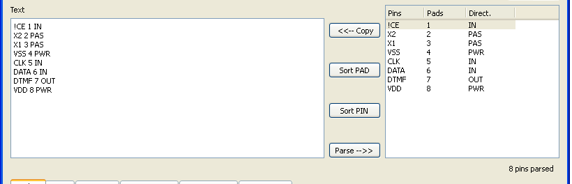
После ввода текста нужно нажать на кнопку "Parse -->" между левым и правым полем, чтобы значения появились в списке справа, можете свериться с картинкой сверху для проверки. После того, как всё готово, в нижней части выбираем вкладку "Use Package" и в единственном на всю вкладку выпадающем меню выбираем корпус, который мы собираемся использовать с деталью (с этим скриптом можно использовать только один корпус за раз, но пока что это не такая большая проблема). Возвращаемся во вкладку Make и заполняем пару полей:
Package Name - если мы только что правильно выбрали корпус, там должно быть его название. Галочку ставить не надо.
Symbol Name - указываем название микросхемы, для меня - HT9200A, затем ставим галочку.
Device Name - точно так же указываем название микросхемы и ставим галочку.
Variant - тут надо бы вписать постфикс микросхемы, который обычно различается в зависимости от корпуса. Для микросхемы, которую я использую в туториале, это неактуально, но приведу пример, где постфикс нужно было бы указать (название микросхемы - MAX7318):
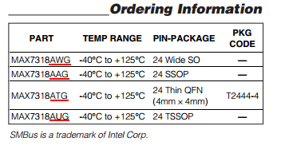
Я всё же выдумаю и укажу постфикс, так как позже я добавлю корпусов в эту микросхему и мне нужно будет их различать - к примеру, "-DIL08" (постфикс автоматически добавится после названия микросхемы, поэтому ставлю тире вначале).
Всё готово...
...Но кнопку "Ok" пока не нажимаем. Сначала копипастим куда-нибудь текст, который мы составили для описания названий и назначений контактов - он нигде не сохраняется и тут же теряется, и я могу гарантировать, что Вам не понравится набирать его снова, если нужно будет сделать какое-либо маааленькое изменение в настройках скрипта и запустить его снова. Открытое окно Notepad вполне подойдёт. После копирования нажимаем "Ok":
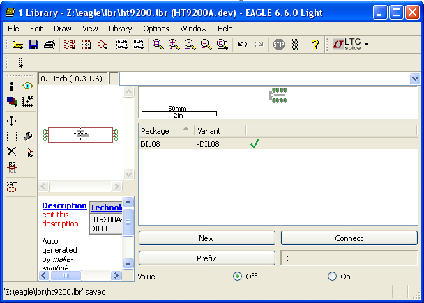
Перед нами результат нашего труда, готовая микросхема в библиотеке. Что ещё можно сделать? Добавить ещё варианты этой же микросхемы, только в другом корпусе (если вы до этого позаботились о том, чтобы добавить все нужные корпуса в свою библиотеку, конечно). Для этого нажимаем огромную кнопку New справа внизу:
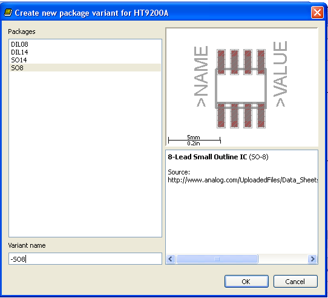
Там выбираем из списка нужный корпус, внизу указываем постфикс по уже описанному принципу, нажимаем OK и возвращаемся в библиотеку к микросхеме. Теперь нажимаем на огромную кнопку Connect:
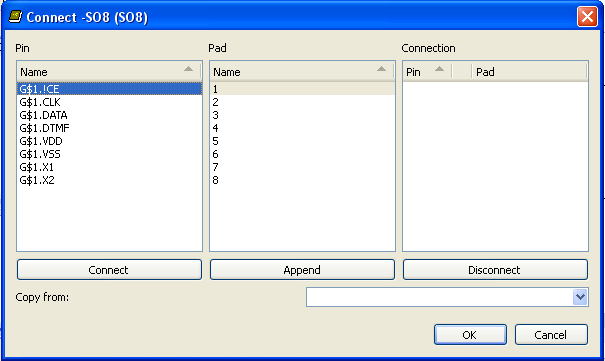
Щёлкаем по левой кнопке Connect, пока левый и центральный список не станут пустыми, а правый не заполнится связанными значениями названий и номеров контактов, затем нажимаем "Ok":
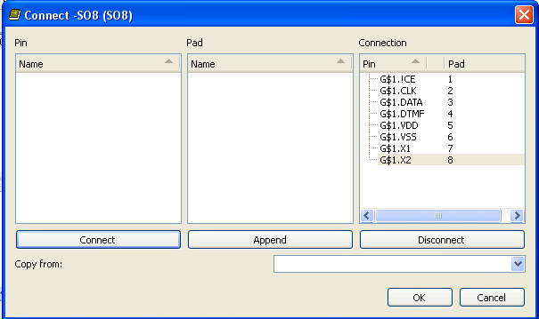
Отлично, теперь микросхема доступна в двух вариантах:
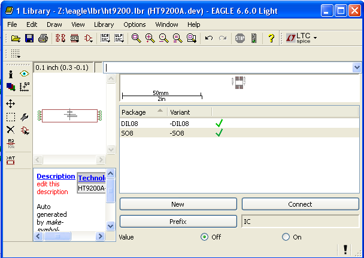
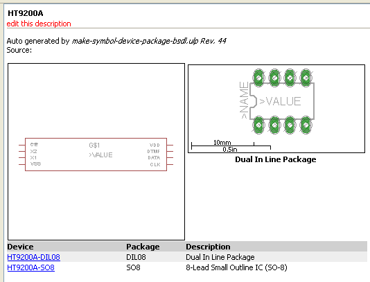
Что ещё можно сделать? Сделать символ микросхемы красивее. Он был создан автоматически, скриптом, а при написании скрипта, по всей видимости, красота не считалась ключевым параметром, поэтому автоматически созданный символ выглядит так:
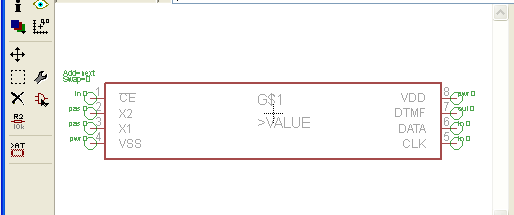
Это - не совсем то. что мы привыкли видеть на схемах. Идём в нашу библиотеку и редактируем символ. Для этого в вертикальном меню инструментов выбираем кнопку Symbol (внизу в строке состояния отображается как Edit Symbol), появляется список:
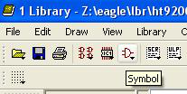
Выбираем из списка наш символ, нажимаем "Ok":
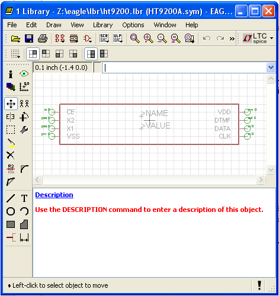
Теперь инструментом Move () передвигаем символ по частям:
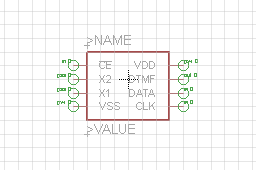
Готово, теперь наша микросхема будет нормально смотреться на схеме!
Чем ещё интересным можно заняться? Изменить описание микросхемы и библиотеки на что-то более вменяемое, нежели "edit this description". Если будешь работать с библиотекой сам - удобно, если будешь делиться с другими - просто необходимость.
Заходим в библиотеку, в меню Library выбираем пункт Description... , в открывшемся поле выбираем нижнее поле для текста и набираем описание библиотеки.
Для смены описания самой созданной нами микросхемы вверху на вертикальной панели выбираем кнопку Device (Edit a device), в списке выбираем нашу микросхему:
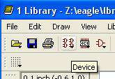
Попадаем в меню редактирования микросхемы, в левом нижнем поле щёлкаем по Description (подсвечено синим):

Кстати, тут, как и в меню редактирования описания библиотеки, можно использовать что-то типа HTML-разметки. Что ж, меняем описание микросхемы на что-то более адекватное:
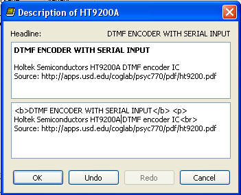
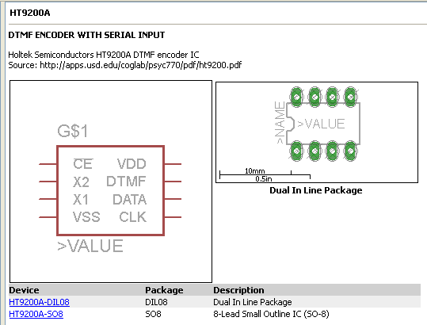
Подсказка - в скрипте не забудьте поменять как название символа (Symbol), так и название микросхемы (Device), иначе будут вполне логичные сообщения о конфликтах.